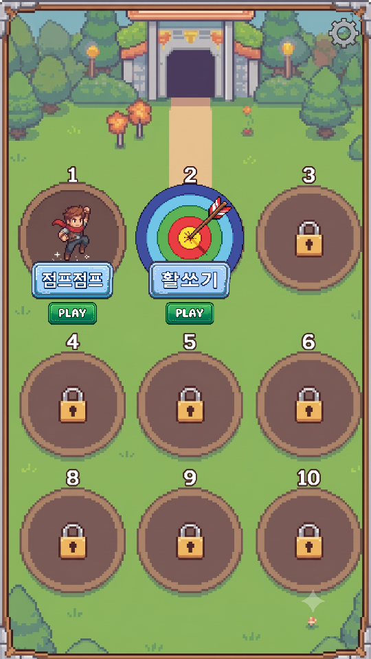
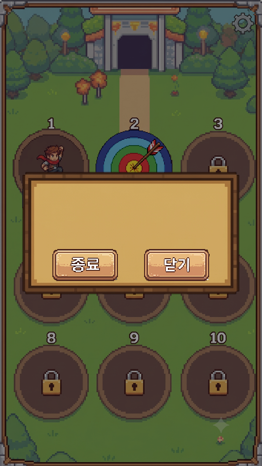
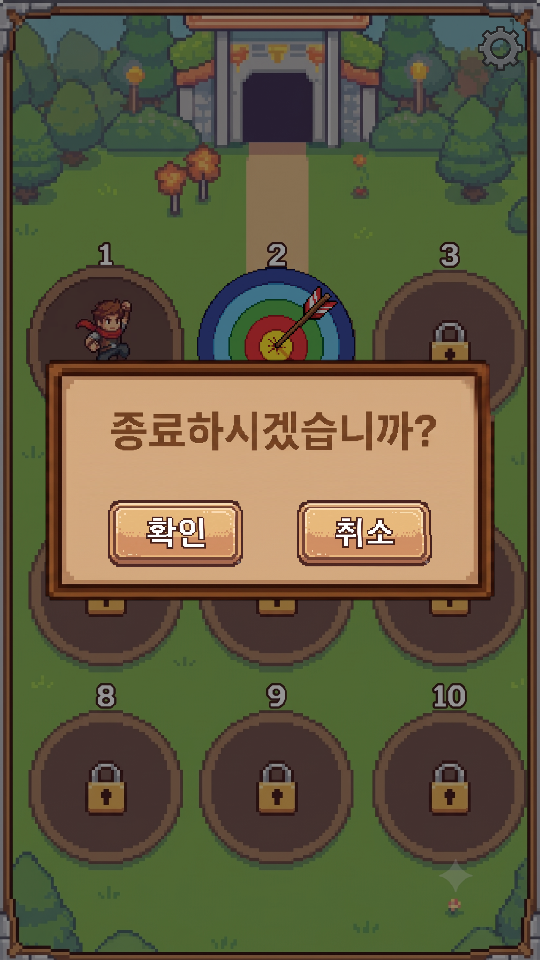
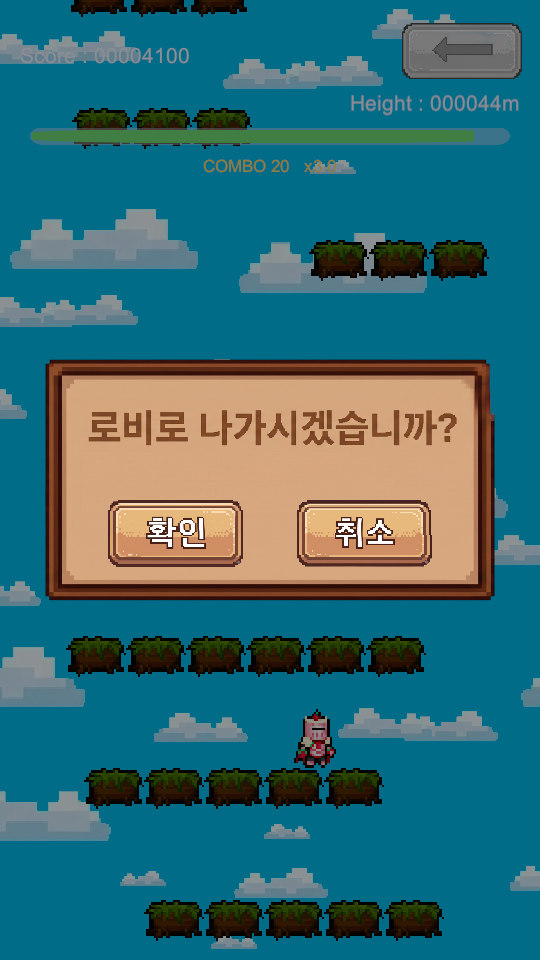

<title>설정 · 나가기 팝업 반영</title>
<meta charset="utf-8">
<style>
  :root{
    --bg:#f7f6f3; --card:#fff; --ink:#1c1b19; --muted:#6b6862;
    --line:#e3e0da; --accent:#c2410c; --ok:#15803d; --warn:#b45309;
  }
  @media (prefers-color-scheme:dark){:root:not([data-theme="light"]){
    --bg:#16151a; --card:#1f1e24; --ink:#eceaf0; --muted:#a3a0ab;
    --line:#33313b; --accent:#fb923c; --ok:#4ade80; --warn:#fbbf24;
  }}
  :root[data-theme="dark"]{
    --bg:#16151a; --card:#1f1e24; --ink:#eceaf0; --muted:#a3a0ab;
    --line:#33313b; --accent:#fb923c; --ok:#4ade80; --warn:#fbbf24;
  }
  body{background:var(--bg);color:var(--ink);font:16px/1.65 "Malgun Gothic","Segoe UI",system-ui,sans-serif;
       margin:0;padding:40px 20px 80px}
  main{max-width:880px;margin:0 auto}
  h1{font-size:28px;line-height:1.3;margin:0 0 6px;letter-spacing:-.02em}
  .sub{color:var(--muted);margin:0 0 36px;font-size:14px}
  h2{font-size:19px;margin:44px 0 14px;padding-bottom:8px;border-bottom:2px solid var(--line)}
  h3{font-size:15px;margin:26px 0 8px;color:var(--accent)}
  section{background:var(--card);border:1px solid var(--line);border-radius:12px;padding:4px 24px 24px;margin-bottom:8px}
  .tw{overflow-x:auto;margin:14px 0}
  table{border-collapse:collapse;width:100%;font-size:14px;min-width:460px}
  th,td{padding:7px 10px;text-align:left;border-bottom:1px solid var(--line);vertical-align:top}
  th{font-weight:600;color:var(--muted);font-size:12.5px;text-transform:uppercase;letter-spacing:.04em}
  td.n{text-align:right;font-variant-numeric:tabular-nums}
  tr:last-child td{border-bottom:none}
  code{background:var(--bg);border:1px solid var(--line);border-radius:4px;padding:1px 5px;font-size:13px;
       font-family:Consolas,"Cascadia Mono",monospace}
  ul{padding-left:20px} li{margin:6px 0}
  ol{padding-left:22px} ol li{margin:8px 0}
  .tag{display:inline-block;font-size:12px;padding:2px 9px;border-radius:99px;border:1px solid currentColor;
       font-weight:600;vertical-align:middle}
  .ok{color:var(--ok)} .warn{color:var(--warn)} .bad{color:var(--accent)}
  .note{border-left:3px solid var(--warn);background:var(--bg);padding:12px 16px;border-radius:0 8px 8px 0;margin:16px 0}
  .note p{margin:6px 0}
  .lead{font-size:17px}
  figure{margin:0}
  .pair{display:flex;gap:14px;flex-wrap:wrap;margin:18px 0}
  .pair figure{flex:1 1 200px;min-width:170px}
  .pair img{width:100%;display:block;border:1px solid var(--line);border-radius:8px;background:var(--bg)}
  .pair figcaption{font-size:12.5px;color:var(--muted);margin-top:8px;text-align:center;line-height:1.5}
  .num{display:inline-block;min-width:1.7em;color:var(--accent);font-weight:700}
  .flow{background:var(--bg);border:1px solid var(--line);border-radius:8px;padding:14px 16px;margin:16px 0;
        font-family:Consolas,"Cascadia Mono",monospace;font-size:13px;line-height:1.9;overflow-x:auto;white-space:pre}
</style>

<main>
<h1>설정 버튼 · 나가기 팝업 반영</h1>
<p class="sub">심심할 때 하는 게임 &middot; 2026-09-08 &middot; <code>@수정사항_02.pdf</code> 3건 &middot; 배치 모드 검증 완료</p>

<section>
<h2>한 줄 요약</h2>
<p class="lead">3건 모두 반영했습니다. <strong>앱을 나가는 길이 전부 &ldquo;확인 팝업 한 번&rdquo;을 거치게 되었습니다.</strong>
실수로 눌러서 판이 날아가지 않도록요.</p>

<div class="tw"><table>
<tr><th>#</th><th>요청하신 것</th><th>결과</th></tr>
<tr><td class="n">1</td><td>로비에 설정 버튼 &rarr; 설정 팝업 (종료 / 닫기)</td>
    <td><span class="tag ok">완료</span> 톱니바퀴가 원래 자리에 <b>진짜 버튼</b>으로 돌아왔습니다</td></tr>
<tr><td class="n">2</td><td>미니게임 뒤로가기 버튼 &rarr; 로비로 나가기 확인</td>
    <td><span class="tag ok">완료</span> 글자 버튼을 <b>화살표 그림</b>으로 교체</td></tr>
<tr><td class="n">3</td><td>폰의 하드웨어 뒤로 버튼도 같은 기능</td>
    <td><span class="tag ok">완료</span> 화면마다 알맞은 팝업이 뜹니다</td></tr>
</table></div>

<p>넣어 주신 그림 9장(<code>@리소스 추가_1차</code>)은 전부 그대로 썼습니다.
작업하면서 <strong>기존 버그를 하나 발견해서 같이 고쳤습니다</strong> &mdash; 아래 &ldquo;덤으로 고친 것&rdquo;.</p>
</section>

<section>
<h2>화면</h2>

<div class="pair">
<figure>
  <figcaption>로비 &mdash; 오른쪽 위 톱니바퀴</figcaption></figure>
<figure>
  <figcaption>설정 팝업<br>위쪽은 사운드 자리로 비워 둠</figcaption></figure>
<figure>
  <figcaption>[종료] &rarr; 종료 확인</figcaption></figure>
<figure>
  <figcaption>미니게임 &mdash; 화살표를 누르면</figcaption></figure>
</div>

<p>세로로 긴 요즘 폰(20:9)에서도 팝업은 <strong>화면 한가운데</strong>에 뜨고 잘리지 않습니다.
(<code>00_popup_settings_tall.png</code> 로 확인했습니다)</p>
</section>

<section>
<h2>어디를 누르면 무엇이 뜨는가</h2>

<div class="tw"><table>
<tr><th>어디서</th><th>누르는 것</th><th>뜨는 팝업</th><th>[확인] 하면</th></tr>
<tr><td>미니게임</td><td>오른쪽 맨 위 <b>&larr;</b></td><td>로비로 나가시겠습니까?</td>
    <td>로비로 (진행 상황은 저장 안 함)</td></tr>
<tr><td>로비</td><td>오른쪽 위 <b>톱니바퀴</b></td><td>설정 (빈 판 + 종료 / 닫기)</td><td>&mdash;</td></tr>
<tr><td>로비</td><td>설정의 <b>[종료]</b></td><td>종료하시겠습니까?</td><td>앱 종료</td></tr>
<tr><td>타이틀 &middot; 로비</td><td>폰 <b>뒤로 버튼</b></td><td>종료하시겠습니까?</td><td>앱 종료</td></tr>
<tr><td>미니게임</td><td>폰 <b>뒤로 버튼</b></td><td>로비로 나가시겠습니까?</td><td>로비로</td></tr>
</table></div>

<p><strong>팝업이 떠 있을 때 뒤로 버튼을 누르면 그 팝업만 닫힙니다.</strong>
[닫기]와 [취소]도 똑같이 &ldquo;맨 위 팝업 닫기&rdquo; 하나입니다.</p>

<div class="note">
<p><b>물어봤던 것 &mdash; 로비와 타이틀에서의 뒤로 버튼.</b>
기획서에는 미니게임 쪽만 그려져 있어서 여쭤봤고, <b>&ldquo;둘 다 종료 확인 팝업&rdquo;</b> 으로 정하셨습니다.
그래서 로비에서 뒤로를 누르면 타이틀로 돌아가지 않고 바로 종료를 묻습니다.</p>
</div>
</section>

<section>
<h2>제가 판단해서 넣은 것 두 가지</h2>

<h3><span class="num">1.</span> 팝업이 떠 있는 동안 게임이 멈춥니다</h3>
<p>기획서에는 없는 내용이지만, <strong>&ldquo;나갈까 말까&rdquo; 고민하는 사이에 캐릭터가 떨어져 죽거나
과녁이 지나가 버리면</strong> 안 되니까요. 확인을 눌러 나가든 취소를 눌러 계속하든,
팝업이 떠 있던 시간은 게임에 없던 시간이 됩니다.</p>

<h3><span class="num">2.</span> [취소]를 누른 그 터치가 점프 / 발사로 이어지지 않습니다</h3>
<p>이 게임의 조작은 &ldquo;화면 아무 데나 터치&rdquo; 하나뿐이라, 팝업이 닫히는 순간 같은 터치가
점프로 세어질 위험이 있었습니다. 팝업이 닫힌 그 프레임까지 입력을 막아 두었습니다.</p>
</section>

<section>
<h2>덤으로 고친 것 &mdash; 버튼이 눌리지 않던 문제</h2>

<p class="lead"><span class="tag bad">버그</span>
<strong>지금까지 미니게임 화면의 &ldquo;&lt; LOBBY&rdquo; 버튼은 눌러도 반응하지 않았을 겁니다.</strong></p>

<p>Unity 에서 화면 위의 버튼이 터치를 받으려면 <code>GraphicRaycaster</code> 라는 부품이
그 화면(캔버스)에 붙어 있어야 합니다. 타이틀과 로비 화면에는 붙어 있었지만,
<strong>미니게임의 HUD 화면은 점수 &middot; 높이 같은 글자만 그리려고 만들어진 것이라 빠져 있었습니다.</strong></p>

<p>지난주 검증에서 못 잡은 이유는, 배치 모드로는 &ldquo;버튼이 화면에 보이는지&rdquo;까지만 확인할 수 있고
<strong>실제로 손가락으로 눌러 보는 것은 확인할 수 없기 때문</strong>입니다.
이번에 같은 자리에 새 버튼을 붙이면서 발견했습니다.</p>

<p>이제 <b>껍데기 쪽에서 없으면 붙여 줍니다.</b> 앞으로 미니게임을 몇 개를 더 만들어도
같은 일이 생기지 않습니다.</p>
</section>

<section>
<h2>넣어 주신 그림 9장</h2>

<p><code>@리소스 추가_1차</code> 폴더에서 자동으로 가져왔습니다. 프로젝트 안에서는
&ldquo;무엇에 쓰는 그림인지&rdquo; 알 수 있는 이름으로 바꿔 두었습니다
(<code>Popup_01</code> / <code>Popup_02</code> 만 봐서는 어느 쪽이 어느 쪽인지 알 수 없어서요).</p>

<div class="tw"><table>
<tr><th>주신 파일</th><th>프로젝트 안 이름</th><th>쓰이는 곳</th></tr>
<tr><td>Setting.png</td><td>Setting_Button.png</td><td>로비 오른쪽 위 톱니바퀴</td></tr>
<tr><td>Undo.png</td><td>Back_Button.png</td><td>미니게임 오른쪽 위 화살표</td></tr>
<tr><td>Empty_Pannel.png</td><td>Popup_Panel.png</td><td>설정 팝업의 빈 판</td></tr>
<tr><td>Popup_01.png</td><td>Popup_Ask_Exit.png</td><td>&ldquo;로비로 나가시겠습니까?&rdquo;</td></tr>
<tr><td>Popup_02.png</td><td>Popup_Ask_Quit.png</td><td>&ldquo;종료하시겠습니까?&rdquo;</td></tr>
<tr><td>Ok / Cancel / End / Close</td><td>이름 그대로</td><td>확인 / 취소 / 종료 / 닫기</td></tr>
</table></div>

<div class="note">
<p><b>앞으로 리소스를 주실 때.</b> <code>@리소스 추가_2차</code> 처럼
<b><code>@리소스</code> 로 시작하는 폴더</b>를 만들어 넣어 주시면 그대로 따라옵니다.
같은 이름의 그림을 넣으면 <b>나중 폴더가 이깁니다</b> &mdash; 그림만 갈아 끼우실 때는
코드를 고칠 필요가 없습니다. 투명 여백도 알아서 잘라 내므로 크기가 흐트러지지 않습니다.</p>
</div>
</section>

<section>
<h2>검증</h2>

<p>Unity 를 열지 않고 배치 모드로 <strong>6종을 연달아 돌려 전부 통과</strong>했습니다.
컴파일 오류 0건, 오류 로그 0건입니다.</p>

<div class="tw"><table>
<tr><th>검증</th><th>결과</th></tr>
<tr><td>씬 4장 굽기 (Build All Scenes)</td><td><span class="tag ok">통과</span> 그림 9장 자동 반입 &middot; 여백 잘라냄</td></tr>
<tr><td>타이틀 / 로비 화면 캡처</td><td><span class="tag ok">통과</span> 팝업 2종을 9:16 과 20:9 두 벌로 확인</td></tr>
<tr><td>점프점프 화면 캡처</td><td><span class="tag ok">통과</span> 화살표 + 나가기 팝업 확인</td></tr>
<tr><td>활쏘기 화면 캡처</td><td><span class="tag ok">통과</span> 화살표 자리 동일</td></tr>
<tr><td>점프점프 자동 플레이 120초</td><td><span class="tag ok">통과</span> 166칸 / 47,900점 (이전과 같음)</td></tr>
<tr><td>활쏘기 자동 플레이 120초 + 30초</td><td><span class="tag ok">통과</span> 96발 명중 / 빗맞히기 7판 모두 정상 종료</td></tr>
</table></div>

<p>팝업 자체도 배치 모드에서 켜서 찍도록 만들어 두었습니다. 앞으로 팝업 그림을 갈아 끼우셔도
<b>Play 를 누르지 않고</b> 자리를 확인할 수 있습니다.</p>

<div class="note">
<p><b>배치 모드로 확인할 수 없는 것 하나.</b> <b>폰의 하드웨어 뒤로 버튼</b>은 실제 기기에서만
확인됩니다. Unity 는 이 버튼을 <code>Esc</code> 키로 받으므로,
<b>PC 에서 Play 를 눌러 놓고 Esc 를 눌러 보시면</b> 똑같이 동작합니다.
(에디터에서는 [확인]을 누르면 앱 종료 대신 Play 가 멈춥니다 &mdash; 정상입니다)</p>
</div>
</section>

<section>
<h2>다음에 하실 일</h2>

<ol>
<li><b><code>Tools &gt; Arcade &gt; Build All Scenes</code> 를 한 번 누르고 Play</b> 로 확인해 주세요.
    타이틀 &rarr; 로비 &rarr; 톱니바퀴 &rarr; 종료 / 닫기, 그리고 게임에 들어가 화살표.
    <b>Esc 키</b>도 눌러 보시면 폰 뒤로 버튼과 같습니다.</li>
<li>APK 는 아직 <b>09-07 에 구우신 것</b>이라 이번 팝업이 들어 있지 않습니다.
    폰에서 보시려면 <code>Tools &gt; JumpJump &gt; Build Android APK</code> 로 다시 구우셔야 합니다 (10분 이상).</li>
<li>설정 팝업의 <b>빈 자리에 넣을 사운드 조절</b>을 어떤 모습으로 할지 정해 주시면 이어서 붙이겠습니다.
    (음악 / 효과음 두 줄짜리 슬라이더가 흔한 모양입니다)</li>
</ol>
</section>

</main>
